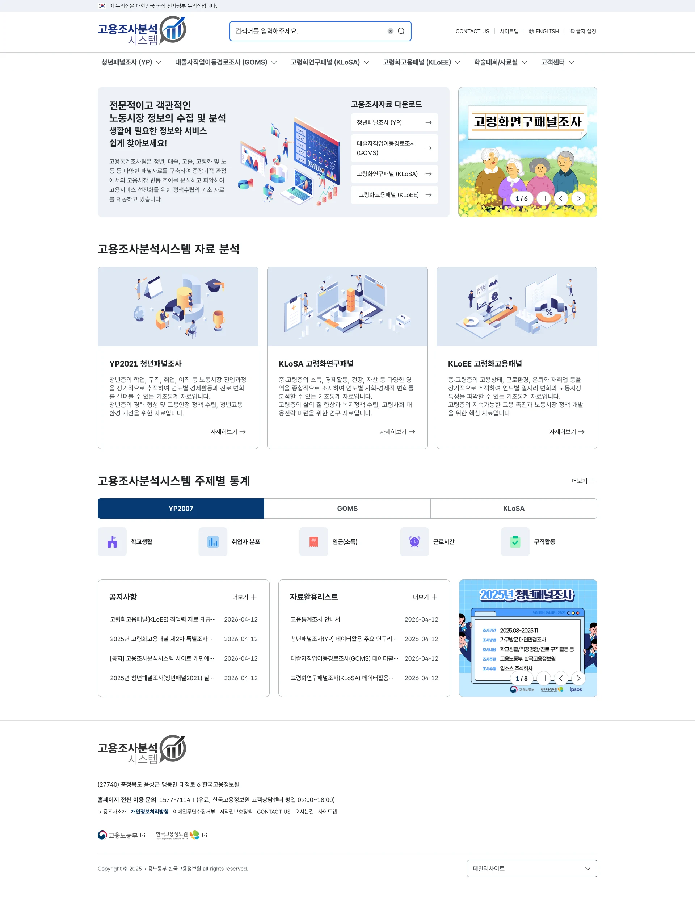
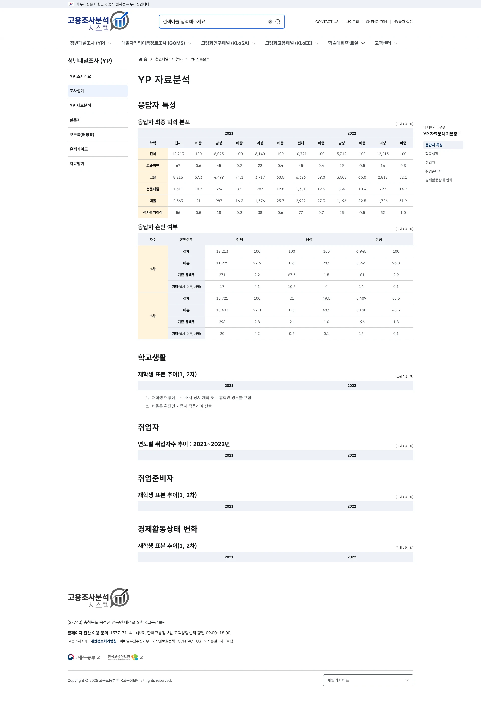
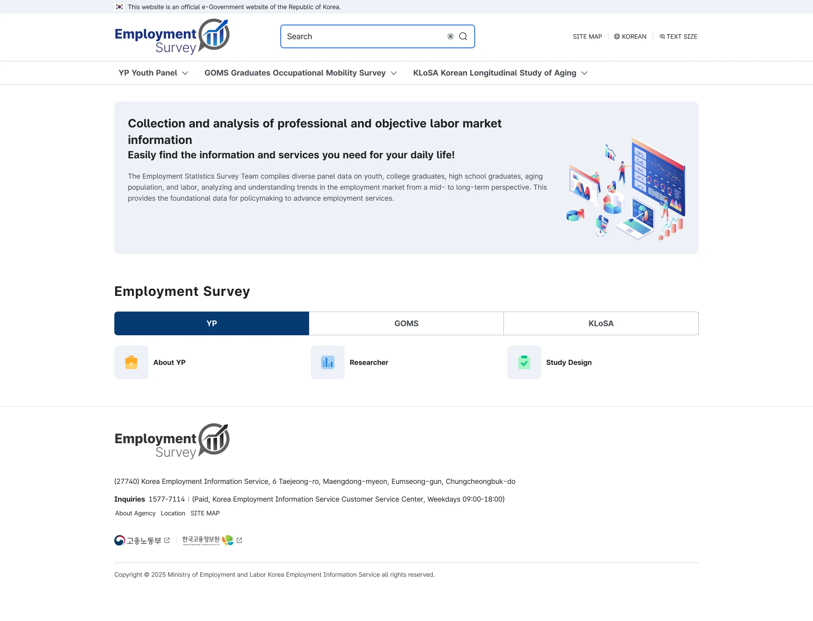
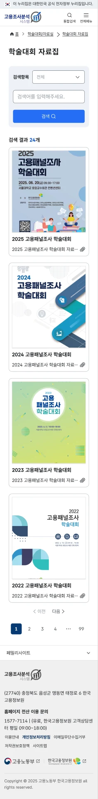

EMPLOYMENT SURVEY SYSTEM
고용조사분석시스템
다양한 고용조사의 소개, 통계, 연구자료를 제공하는 서비스입니다. 조사별 정보 구조와 밀도 높은 콘텐츠를 정리하고, 국문·영문과 PC·모바일에 걸쳐 전개한 UI 디자인을 소개합니다.
01 / SERVICE ENTRY
주요 자료를 만나는 첫 화면
YP, GOMS, KLoSA, KLoEE 등 조사 유형을 상위 메뉴로 구분합니다. 메인에서는 조사자료 다운로드, 자료분석, 주제별 통계와 소식을 서로 다른 콘텐츠 영역으로 구성했습니다.

02 / INFORMATION DESIGN
밀도 높은 통계에 읽는 순서를 만들기
자료분석 화면은 응답자 특성, 학교생활, 취업자 등 주제별로 구분됩니다. 다단 표 머리글과 구분 배경색, 수치 정렬을 통해 행과 열의 관계를 표현하고, 본문 옆에는 페이지 내 목차를 배치했습니다.

03 / ADAPTIVE LAYOUT
언어와 화면 폭에 맞춘 전개
영문에서는 조사별 메뉴와 검색을 유지하면서 긴 문장에 맞춰 콘텐츠를 배치합니다. 모바일 자료실에서는 검색 조건과 자료 카드를 한 열로 구성해 세로 탐색 흐름을 만듭니다.


공통된 탐색 체계
메뉴, 검색, 본문, 푸터의 역할을 화면 전반에서 일관되게 표현합니다.
콘텐츠에 맞는 UI 패턴
조사 소개, 통계표, 자료실 등 정보의 성격에 따라 다른 표현 방식을 사용합니다.